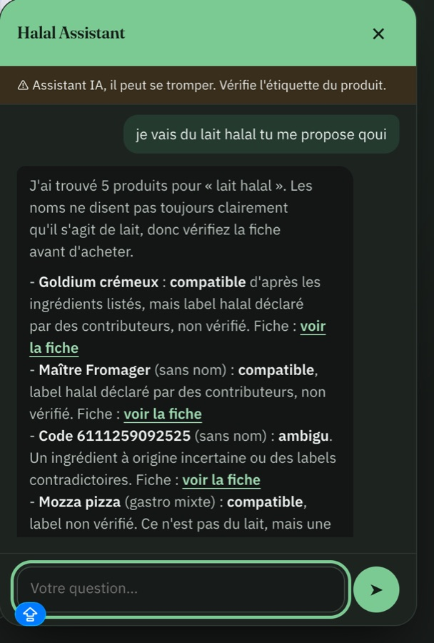

Projet à la une · E-halal · 2026
Halal Assistant : un agent IA pour Halal Open Food Facts et Halal Open Beauty Facts
Problème
Les deux bases comptent plusieurs millions de fiches. Trouver un produit adapté, comprendre son statut halal ou savoir comment contribuer demandait de maîtriser la recherche et les filtres des sites.
Solution
Un assistant conversationnel intégré aux deux sites. Il s'appuie sur la base produits (RAG) et sur Claude, via OpenRouter, pour répondre en langage naturel, avec un lien vers chaque fiche citée.
- Répond aux questions sur un produit.
- Évalue la conformité halal à partir des ingrédients, et distingue un label vérifié d'un label déclaré par les contributeurs.
- Aide l'utilisateur à choisir des produits halal adaptés à sa demande.
- Aide à compléter une fiche produit.
- Guide l'utilisateur dans la navigation des sites.
Mon rôle
Conception de l'agent et intégration dans les deux plateformes, en tant que Chief Engineer d'E-halal.
Résultats
- En production sur halalopenfoodfacts.org et halalopenbeautyfacts.org.
- Garde-fous visibles : avertissement sur les limites de l'IA, statut nuancé (compatible, ambigu) et lien vers la fiche source.

- Question de l'utilisateur
- Recherche dans la base produits (RAG)
- Génération par Claude via OpenRouter
- Réponse avec liens vers les fiches